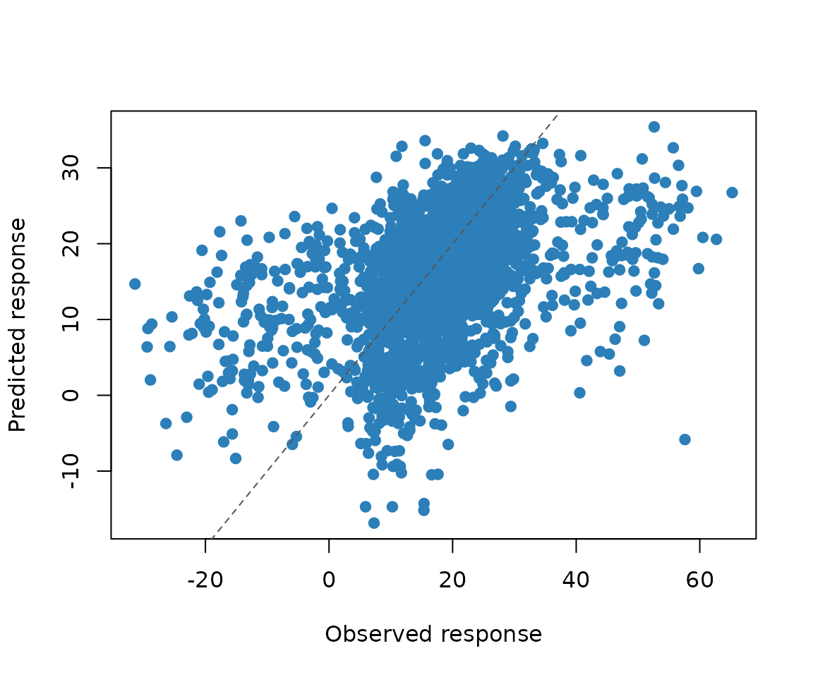

magp models experiments in which every component has two
features: an amount and a position in an ordered sequence. A formulation
experiment, for example, may vary both the amount of each ingredient and
the order in which the ingredients are added.
This article fits the compact two-dimensional model, predicts held-out responses, and obtains predictive uncertainty.
Input layout
For q components, each row has 2 * q input
columns. The first q columns contain quantitative levels.
The remaining columns contain a permutation of 1:q,
describing the component positions in that run.
library(magp)
train <- read.table(
system.file("extdata", "example_train.txt", package = "magp"),
header = TRUE
)
test <- read.table(
system.file("extdata", "example_test.txt", package = "magp"),
header = TRUE
)
train[1:3, ]
#> A B C D a b c d y
#> 1 0.24193548 0.2419355 0.37096774 0.1129032 1 2 3 4 24.92158
#> 2 0.01612903 0.6612903 0.98387097 0.4032258 1 2 4 3 21.40920
#> 3 0.33870968 0.7258065 0.08064516 0.3387097 1 2 4 3 22.23420The example contains four quantitative columns (A
through D), four sequence-position columns (a
through d), and a response named y. Because
the response column is named y, the fitting function can
identify it and infer q directly.
Fit the two-dimensional model
fit <- magp2d_fit(
train,
seed = 1,
maxeval = 100
)
fit
#> <magp2d model>
#> components: 4
#> training runs: 31
#> nugget: 0.001
#> fitted mean: 15.7967
#> objective: 235.4236
#> optimizer: converged (status 4 )To fit the model from multiple parameter starts, set
n_starts above one. Setting workers above one
runs those starts in separate local R processes.
fit <- magp2d_fit(
train,
seed = 1,
n_starts = 8,
workers = 2
)Predict new runs
prediction <- predict(
fit,
test,
se.fit = TRUE,
type = "response"
)
comparison <- data.frame(
observed = test$y,
predicted = prediction$fit,
standard_error = prediction$se.fit
)
head(comparison)
#> observed predicted standard_error
#> 1 17.424048 17.13052 30.50386
#> 2 27.443544 29.49620 32.70545
#> 3 12.505682 13.28978 34.35567
#> 4 15.391038 22.30868 32.00704
#> 5 9.994182 11.40215 31.87554
#> 6 23.182836 10.49296 31.56366
magp2d_rmse(comparison$predicted, comparison$observed)
#> [1] 11.44883type = "response" includes the nugget variance for a
future response. Use type = "latent" when uncertainty about
the underlying noise-free surface is the target.
plot(
comparison$observed,
comparison$predicted,
xlab = "Observed response",
ylab = "Predicted response",
pch = 19,
col = "#2c7fb8"
)
abline(0, 1, lty = 2, col = "#555555")
Use the full mapping
The full model has the same input and prediction interface. Only the fitting function changes.
fit_full <- magpfull_fit(train, seed = 1)
predict(fit_full, test, se.fit = TRUE, type = "response")The compact and full models represent sequence positions differently. It is often useful to compare their predictive performance for the application at hand rather than choosing only from model size.
Citation
Run the following command for the software citation and the associated methodology paper.
citation("magp")
#> To cite magp, please cite the software: The statistical methodology is
#> described in:
#>
#> Wang T, Xiao Q (2026). _magp: Mapping-Based Additive Gaussian Process
#> Models_. doi:10.32614/CRAN.package.magp
#> <https://doi.org/10.32614/CRAN.package.magp>. R package version
#> 0.12.0, <https://CRAN.R-project.org/package=magp>.
#>
#> Xiao Q, Wang Y, Mandal A, Deng X (2024). "Modeling and Active
#> Learning for Experiments with Quantitative-Sequence Factors."
#> _Journal of the American Statistical Association_, *119*(545),
#> 407-421. doi:10.1080/01621459.2022.2123335
#> <https://doi.org/10.1080/01621459.2022.2123335>.
#>
#> To see these entries in BibTeX format, use 'print(<citation>,
#> bibtex=TRUE)', 'toBibtex(.)', or set
#> 'options(citation.bibtex.max=999)'.